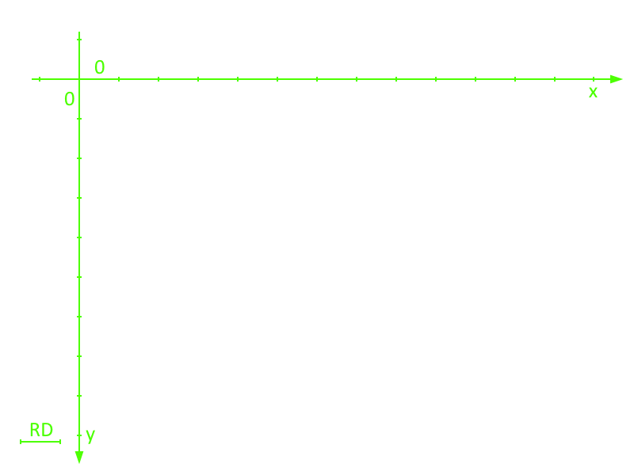
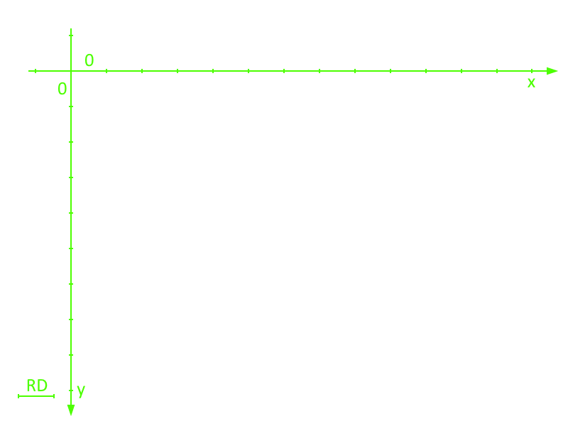

Problem Analysis
Service Area
Problem: we need a proper representation of the service area to optimally move and monitor the transport trolley.Solution:
Reasons:
- Since the HOME is the top-left corner, it's more intuitive to represent it as the first element of the matrix, which is the [0,0] element.
- We can associate a cartesian coordinate system to the matrix with the origin in the top-left corner and RD as unit. That might make things easier later on, if we will need to implement a graphical representation of the transport trolley state (for example in WasteServiceStatusGUI). This because almost every software, library, framework or API, start drawing from the top-left corner to the bottom-right one.
 

Show the coordinate system
Relevant Positions
The matrix number of rows and columns depend on RD (which is the size of the DDR robot), therefore for the moment we assume to have an M x N matrix, i.e. with respectively M rows (x axis) and N columns (y axis).
The relevant positions are:
- [0,0] =
HOME - from [0,M] to [4,M] =
INDOOR - from [N,0] to [N,4] =
GLASSBOX - from [N,M-4] to [N,M] =
PLASTICBOX
Requirements Formalization
Entities
| Entity | Activity | Type | Description/Behaviour |
|---|---|---|---|
| wasteTruck | Reactive | Entity that approaches the INDOOR of the service area to dump some wasteLoad. It's represented as an actor for testing/simulation purposes: it sends dummy requests once in a while. | |
| wasteService | Proactive & Reactive | Actor | Handles the wasteTruck requests and manages the transport trolley actions. It also sends updates to the wasteServiceStatusGUI and to the alarmDevice. |
| Reactive | Actor | Entity that receives commands from the transportTrolley and drives the DDR robot. | |
| transportTrolley | Proactive & Reactive | Actor | Main entity of the wasteService system, which moves within the service area and performs the deposit actions. |
| wasteService- StatusGUI |
Reactive | Entity that receives data from the wasteService and updates a GUI, used to monitor the status of the service area. We model it as an actor beacuse it processes messages one by one and updates the GUI accordingly. | |
| alarmDevice | Proactive | Entity, which is part of a smart device, that sends a message to the wasteService when it detects the presence of an obstacle. We formalize the alarmDevice as an actor because it has its own autonomous flow of control, and sends messages to wasteService. | |
| warningDevice | Reactive | Entity, which is part of a smart device, used to monitor the state of the trolley, We model it as an actor beacuse it processes messages one by one and updates the Led state accordingly. |
Data
We had chosen| Data | Type | Description |
|---|---|---|
| truckLoad | Floating point variable |
Indicates the weight of the waste that the truck wants to dump.
Since the weight is expressed in kg, we have to use decimal too.
val truckLoad : Float
|
| wasteLoad | Floating point variable |
Indicates the weight of waste that the transport trolley is going to deposit.
val wasteLoad : Float
|
| WasteType | Enumerative |
Indicates the type of waste to deposit.
enum class WasteType { PLASTIC, GLASS }
|
| PICKUP_TIME | Integer constant |
Time in seconds, known in advance, it takes the transport trolley to pick up the waste.
const val PICKUP_TIME : Int
|
| MAXPB | Floating point constant |
Maximum waste capacity that the PlasticBox can store.
const val MAXPB : Float
|
| MAXGB | Floating point constant |
Maximum waste capacity that the GlassBox can store.
const val MAXGB : Float
|
| RD | Integer constant |
Length of the transport trolley.
const val RD : Int
|
| DLIMT | Floating point constant |
Limit distance beyond which the alarm is activated.
const val DLIMT : Float
|
| Enumerative |
Unique area, within serviceArea, of RD width. A Box represents a position where the transport trolley could be at a certain time.
enum class Box { EMPTY, HOME, TRANSPORT_TROLLEY, INDOOR, PLASTICBOX, GLASSBOX }
|
|
| 2 dimensional matrix of Box-es |
Area within which the transport trolley can move, made by N x M Boxes.
val serviceArea = Array(N) { IntArray(M) }
|
|
| Integer constant |
Number of rows of the service area matrix.
const val ROWS : Int
|
|
| Integer constant |
Number of columns of the service area matrix.
const val COLUMNS : Int
|
|
| Enumerative |
All the possible states of the transport trolley.
enum class TTState { IDLE, MOVING, PICKINGUP, STORING, STOPPED }
|
|
| Enumerative |
All the possible states of the Led.
enum class LedState { OFF, ON, BLINKING }
|
Messages
| Message | Type | Description |
|---|---|---|
| storeLoad | Request | Message sent from the truck driver to the WasteService through a smart device, to ask if it can dump TruckLoad kg of waste. |
| loadAccepted | Response | Message received from the WasteService, that means there is enough space for the waste to be deposited. Once this message is received, the truck waits T seconds (prefixed pickup time), then it leaves and frees the INDOOR. |
| loadRejected | Response | Message received from the WasteService, that means there is NOT enough space for the waste to be deposited. When the truck receives this messages, it leaves and freed the INDOOR immediately. |
| stop | Dispatch | Alarm message, sent from the RaspberryPi to the WasteService, to stop the transport trolley activity. |
| resume | Dispatch | Message, sent from the RaspberryPi to the WasteService, to resume the transport trolley activity. |
State |
Dispatch | Message, sent from the WasteService to the WasteServiceStatusGUI, which contains the transport trolley current state. |
| Dispatch | Message, sent from the WasteService to the WasteServiceStatusGUI, which contains the state the Led will have to enter. |
Models
Why QAK
Problem: we need to fill the abstraction gap related to the concept of service.Solution:
Reasons:
- It's was implemented entirely created whitin our software house, which makes it easier to get information and support from the actual creator of the language.
- It provides a way to represent concepts related to services, such as request, response, dispatch, etc.; while other general-purpose languages would need external libraries (e.g. Java would need some kind of JAR to implement Actors), frameworks or resources to do the same.
- It allows you to create executable models, directly from the language, which capture the salient aspects of the requirements or problems.
- Our software house already has some project and components we could exploit and use.
QAK documentation
QAK is a custom (meta)modeling language documentation
System QAK Model
File: demo_system_overview.qak
System demo_system_overview
// CONTEXTS ===================================================================
Context ctx_wasteservice ip [host="localhost" port=11800]
Context ctx_monitor ip [host="localhost" port=11801]
Context ctx_alarm ip [host="localhost" port=11802]
Context ctx_test ip [host="localhost" port=11803]
// MESSAGES ===================================================================
// truckdriver <-> wasteservice
Request storerequest : storerequest( WasteType, TruckLoad )
Reply loadaccept : loadaccept()
Reply loadrejected : loadrejected()
// rasp <-> wasteservice
Event stopevent : stopevent()
Event resumeevent : resumeevent()
Dispatch setled : setled( STATE )
// radar -> rasp ??
Event sonardata : sonar( Data )
// trolley -> truckdriver
Event pickupend : pickupend()
// trolley -> ??
Event depositend : depositend()
// wasteservice -> trolley
Dispatch loadwaiting : loadwaiting( WasteType )
// wasteservice -> monitor
Dispatch servicestate : servicestate(TrolleyState, TrolleyPosition, PlasticWeight, GlassWeight, LedState)
// ACTORS =====================================================================
QActor wasteservice context ctx_wasteservice {
State state_init initial {
// init (reset system)
[#
var currentPlastic = 0.0F
var currentGlass = 0.0F
// reset trolley position to Home
#]
println("[WasteService] ")
}
Goto state_idle
State state_idle {
// wait for messages:
}
Transition t0 whenMsg storerequest -> state_handle_store
whenEvent stopevent -> state_hande_stop
whenEvent resumeevent -> state_handle_resume
// begin to accept requests
State state_handle_deposit {
// check if there is enough space
// yes: send accept and make the trolley do the deposit action
if [# utils.checkEnoughSpace(WasteType, TruckLoad) #] {
replyTo depositrequest with loadaccept : loadaccept()
forward trasporttrolley -m loadwaiting : loadwaiting()
}
// no: send rejected
else {
replyTo depositrequest with loadrejected : loadrejected()
// trolley stai a casa porcodio che cazzo fai c'è il covid
}
}
Goto state_idle
// DA DEFINIRE: il comando per settare il led forse è meglio sul raspberry
// ma bisogna capire se è meglio comunicare che il robot stia
// lavorando al rasp oppure far fare tutto al WasteService
State state_handle_stop {
// utils.trolley.sendAction(INTERRUPT)
// utils.rasp.setLed(ON)
}
Goto state_idle
State state_handle_resume {
// var wasDoingTask = utils.trolley.sendAction(RESUME)
if [# wasDoingTask #]{
// utils.rasp.setLed(BLINK)
}else{
// utils.rasp.setLed(OFF)
}
}
Goto state_idle
}
QActor transporttrolley context ctx_wasteservice {
State state_init initial {
[#
var currWaste = ""
#]
}
Goto state_idle
State state_idle {
// Just chilling...
}
Transition t0 whenEvent emergencyinterrupt -> state_interrupt_handle // non sono troppo sicuro di questi due
whenEvent emergencyresume -> state_resume_handle
whenMsg loadwaiting -> state_loadwaiting_handle
// goes to INDOOR
State state_loadwaiting_handle {
// ormai leggere il payload di un messaggio equivale a rendere il codice confuso perchè mi dimentico di aggiungere "msg."
// utils.trolley.moveTo(INDOOR)
[# currWaste = WasteType #]
}
Goto state_pickup
// unload the truck
// (separare il movimento dal pickup mi sembrava un po' più sensato di avere tutto insieme, ma potrebbe essere una cazzata)
State state_pickup {
// utils.trolley.pickup()
emit pickupend : pickupend()
}
Goto state_deposit
// deposit the load
State state_deposit {
if [# currLoad == 'plastic' #]{
// utils.trolley.moveTo(PLASTIC)
}else{
// utils.trolley.moveTo(GLASS)
}
delay 200 // simula il tempo di deposito (?)
emit depositend : depositend() // potrebbe servire, al momento non so per cosa però
}
Transition t1 whenTimer 1000 -> state_gohome // prima di tornare a casa, attende nuovi depositi
whenMsg loadwaiting -> state_loadwaiting_handle
// better a lot of simple states than fewer more complex
State state_gohome {
// utils.trolley.moveTo(HOME)
}
Goto state_idle
// La soluzione precedente non tiene conto di eventuali richieste che arrivano durante il tragitto verso casa
}
QActor wasteservicestatusgui context ctx_monitor {
// initial state, reset gui status (idk what it has, so just a random func)
State state_init initial {
// utils.gui.reset()
}
Goto state_idle
// waiting for updates
State state_idle {
// Really wished I got that Netflix subscription...
}
Transition t0 whenMsg servicestate -> state_update_handle
State state_update_handle {
// still no idea di come leggere i dati di un messaggio
// still no idea di come settare lo stato di questa maledetta gui
// no thoughts, only functions
// utils.gui.setState(TrolleyState, TrolleyPosition, PlasticWeight, GlassWeight, LedState)
}
Goto state_idle
}
QActor raspdevice context ctx_alarm {
// initial state, DLIMT hardcoded atm
State state_init initial {
[#
var DLIMT = 30.0F
var LedStatus = "OFF"
var stoppped = false // potrebbe essere evitato controllando lo stato del Led
// ma lo preferisco per leggibilità del codice
#]
}
Goto state_idle
// waiting for data from sonar
State state_idle {
// too much chilling in here, give me a jacket...
}
Transition t0 whenEvent sonardata -> state_sonar_handle
whenMsg setled -> state_led_handle // non implementato al momento, aspettando discussione
State state_sonar_handle {
// non c'è scritto da nessuna parte come leggere i dati del payload
// potrei piangere non ironicamente
if [# DATA >= DLIMT && !stopped #]{ // è giusto che il sonar debba farsi il problema se il robot è fermo?
emit stopevent : stopevent()
[# stopped = true #]
}
if [# DATA < DLIMT && stopped #]{
emit resumeevent : resumeevent()
[# stopped = false #]
}
}
Goto state_idle
}
QActor testdriver context ctx_test {
// initialize a random load and does a request
State state_init initial{
[#
var WasteType = rand('plastic', 'glass') // rand() non penso esista
var TruckLoad = rand(1, 15)
#]
request wasteservice -m storerequest : storerequest( WasteType, TruckLoad )
}
Transition t0 whenMsg loadaccept -> state_accept_handle
whenMsg loadrejected -> state_end // il mio lavoro qui è finito
State state_accept_handle {
// not sure to what happens here
// I think it just wait for a pickup action to end
}
Transition t1 whenEvent pickupend -> state_end
State state_end {
// see you, space waste truck!
}
// Goto futuro incerto, teoricamente il wastetruck qui ha finito di fare le cose utili
}
// Additional actor for test/simulation purposes only